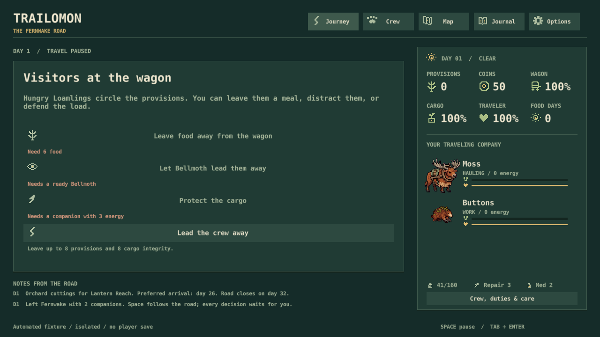
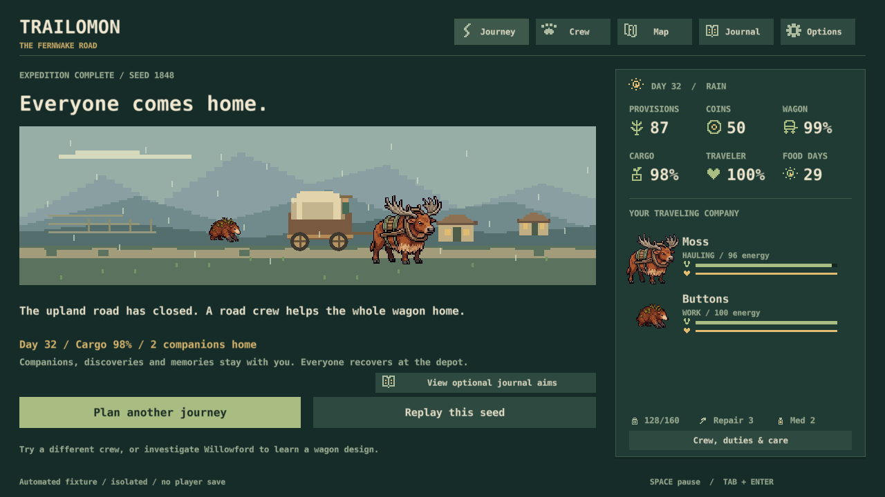

Trailomon · expedition balance · October 31, 2026
Give the slower road a reason
Two new decisions. The broader comparison is complete and three bugs are fixed. The game remains in core systems; art is still deferred.
My recommendation: strengthen woodland supplies and Slatewhorl's footing. Keep the current combat and equipment values for now: their benefits depend on preparation and crew.
E1Make woodland worth a gathering stop
Raise woodland's base gathering yield from 10 to 16 food. Keep its longer, slower road, existing depletion, meals, carrying limit and Loamling bonus. Explain the extra food before choosing the route.
Evidence: Woodland currently has the same gathering yield as meadow. In 144 matched peaceful journeys per route, woodland/ridge delivered on time 27 times versus 77 on meadow/ridge, averaging 1.48 days later.
Cost: One small balance change, updated previews and a focused comparison; preserve ongoing journeys' rules. Richer gathering may make Loamling especially useful here. Recommendation: YES. Make the detour offer supplies, then verify it does not become the automatic choice.
E2Give Slatewhorl sure footing in woodland and gorge
When Slatewhorl hauls, ignore those terrains' 10% slowdown. Keep its own 12% slower pace, existing crossing support and combat shield. Show this advantage in the trail report.
Evidence: Slatewhorl as the only hauler delivered on time in 0 of 36 default peaceful runs; 32 arrived late and four needed rescue. Reedskipper + Slatewhorl delivered 10 of 12, so this is a specific hauling weakness rather than a reason to raise every stat.
Cost: One terrain exception, clear preview and focused crew/route checks; preserve ongoing journeys' rules. Woodland and gorge become a more natural fit for this creature, though still slower routes. Recommendation: YES.
What the comparison found
4,032 journeys plus 292 matched encounter starts. Every trace replayed identically. This is a fixed-policy bot study, not a new human playtest. Each row below has 144 journeys: 12 legal two-creature pairs × seeds 1–12, all species unlocked. Default: peaceful choices, steady pace, no item, meadow/ridge, ferry.
| Choice | On time | Late | Rescued | Mean day | Cargo |
|---|---|---|---|---|---|
| Default | 77 | 63 | 4 | 26.54 | 85.71 |
| Fight when available | 73 | 65 | 6 | 26.94 | 74.80 |
| Woodland / ridge | 27 | 107 | 10 | 28.02 | 84.88 |
| Meadow / gorge | 25 | 98 | 21 | 28.45 | 84.85 |
| Hurried + padded trace | 144 | 0 | 0 | 22.07 | 79.54 |
Combat: Fighting saves provisions at scavengers but often costs cargo and energy. Brindlehorn + Cindercoil repelled all 12 sampled guardians without an immediate cargo loss or detour; its peaceful option took a detour in all 12. Other pairs often did better by avoiding the fight. Keep those preparation choices meaningful.
Equipment: Padded trace helps hurried hauling; dry wrap reduces weather fatigue. Release rope raised mean cargo from 71.22 to 78.50 in the risky-crossing cohort, but did not guarantee earlier delivery. Purchases use their real prices and weight.
Limits: Fixed routes and strategies, only 12 seeds, two-member veteran crews. These are not optimal strategies or human playtime measurements. Matched encounter starts can overlap across parent strategies. Listening, physical input and the recorded activation crash remain separate work.
Full report and method · Summary data · Source fingerprint · Complete compressed results
Already fixed and tested
- Exhausted, foodless crews can now withdraw from a threat using the existing costs.
- Battle entry uses the actual energy requirement: three on new journeys, four for legacy rules.
- Rescue on an overshooting travel day no longer produces an invalid ending save.
88 Lua scenarios, native persistence and 36 native GUI states passed. These two actual 1280×720 captures were inspected.

